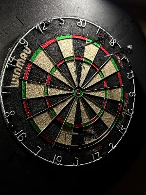

Wybierz grę:
KLASYCZNA

Klasyczna gra w darta 501 polega na jak najszybszym zredukowaniu
początkowej puli punktów dokładnie do zera.
Zawodnicy rzucają naprzemiennie seriami po trzy lotki, a zdobyte
wartości są na bieżąco odejmowane od ich aktualnego stanu konta.
Aby wygrać, gracz musi zakończyć leg precyzyjnym rzutem
w pole podwójne (double) lub w sam środek tarczy (bullseye).

1-4
GRACZY

3 LOTKI
NA RUNDĘ

501
PUNKTÓW
SHANGHAI

W tym trybie zawodnicy w każdej rundzie rzucają wyłącznie w numer
odpowiadający numerowi danej kolejki i sumują zdobyte punkty.
Gra może jednak zakończyć się natychmiast, jeśli ktoś w jednym
podejściu trafi singiel, debel i trip aktualnej wartości.
To spektakularne zagranie nosi nazwę „Szanghaj” i gwarantuje
automatyczne zwycięstwo w całym meczu, niezależnie od wcześniejszego
wyniku.
1-4
GRACZY
3 LOTKI
NA RUNDĘ
20
RUND
AROUND THE WORLD

Ta popularna odmiana polega na sekwencyjnym trafianiu we wszystkie
sektory tarczy od numeru 1 do 20.
Dopóki gracz nie zaliczy aktualnej liczby, nie może przejść do
kolejnego sektora, co świetnie trenuje powtarzalność rzutów.
Całą rywalizację wygrywa ta osoba, która jako pierwsza przejdzie
przez cały zegar i zakończy grę celnym trafieniem w środek tarczy.
1-4
GRACZY
3 LOTKI
NA RUNDĘ
KAŻDY
SEKTOR
121 CHECKOUT

Legendarny tryb treningowy, który uczy opanowania i precyzji przy
zamykaniu legów na podwójnych.
Rozpoczynasz od wartości 121 punktów i masz dokładnie 9 lotek (3
podejścia), aby wyzerować licznik. Jeśli uda Ci się zamknąć cel, w
kolejnej rundzie poprzeczka idzie w górę (+1 punkt). Jeśli nie
zmieścisz się w limicie, wartość celu spada (-1 punkt).
Graj w pojedynkę, by szlifować checkouty pod presją, lub połącz siły
ze znajomymi w trybie kooperacji. Na jakim pułapie zdołasz ukończyć
trening?
1-4
GRACZY
3 LOTKI
NA RUNDĘ
121
PUNKTÓW
DOUBLES

Ten format skupia się na zewnętrznym pierścieniu tarczy i służy jako
doskonały trening kluczowych zamknięć meczowych.
W
wersji jednoosobowej polega na trafianiu wyłącznie pól podwójnych od
1 do 20 w kolejności numerycznej
Nazwa ta odnosi się również do klasycznej gry drużynowej, gdzie
dwuosobowe zespoły rzucają naprzemiennie i dzielą jeden wspólny
licznik punktów.
1-4
GRACZY
3 LOTKI
NA RUNDĘ
OD D1
DO D20